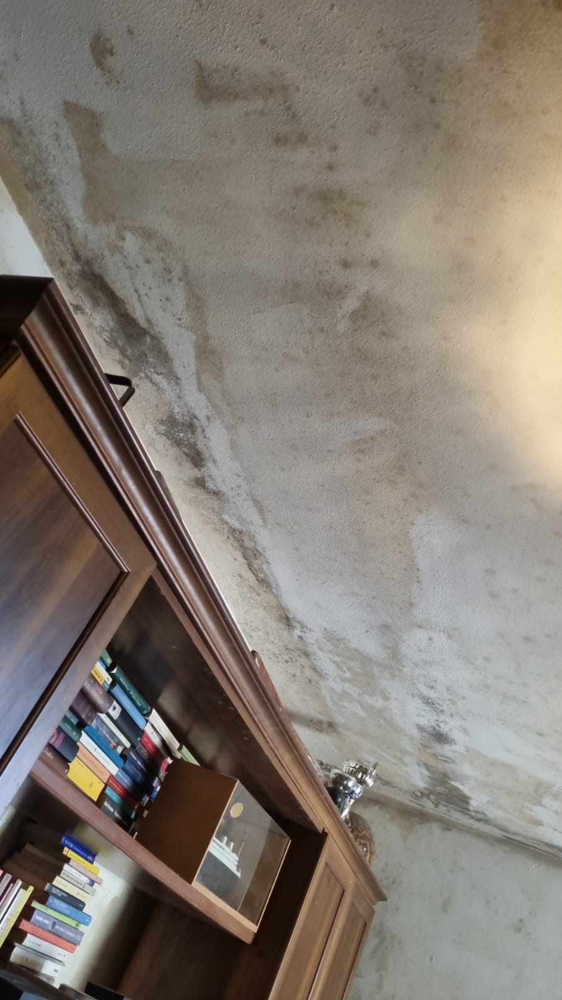
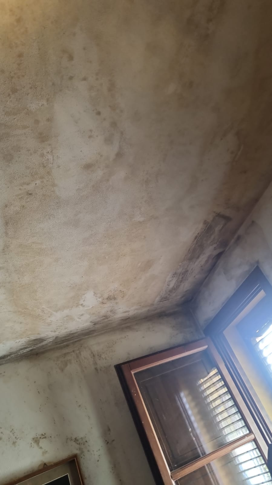
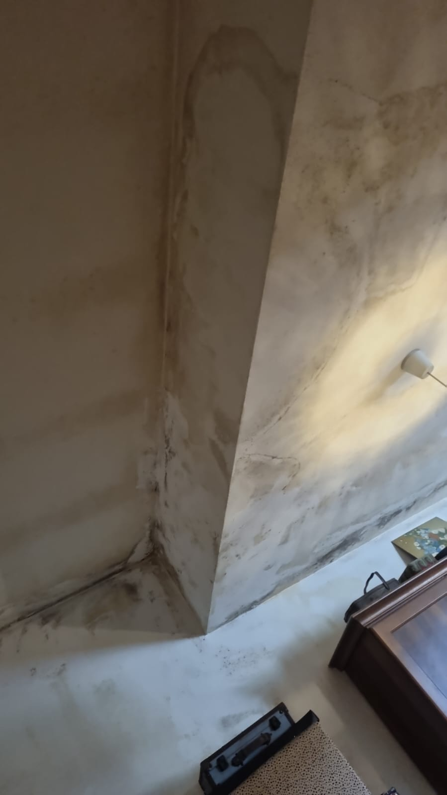
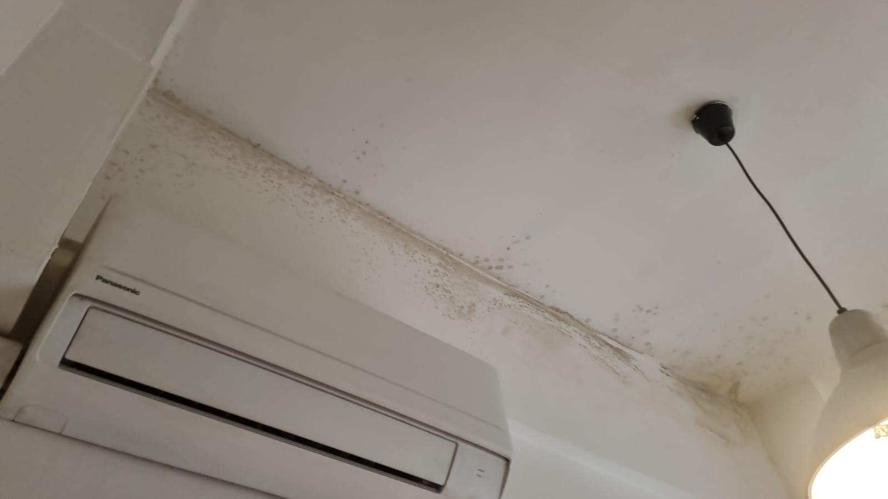
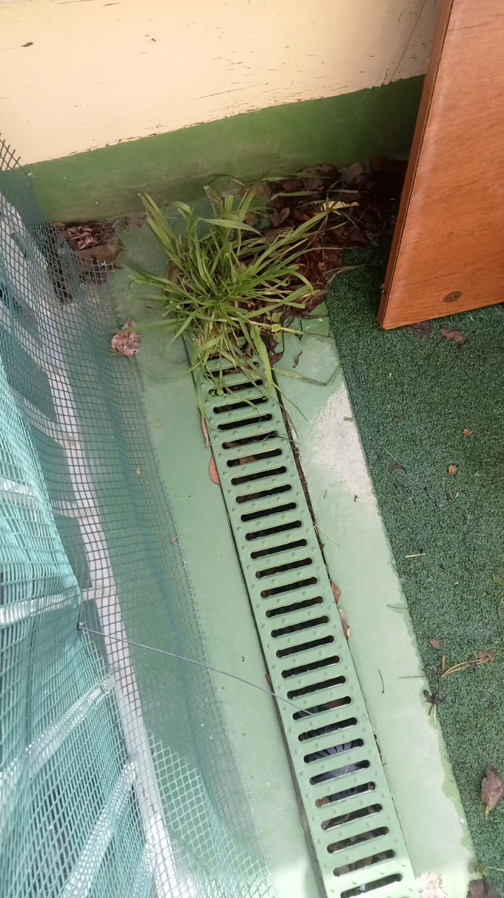
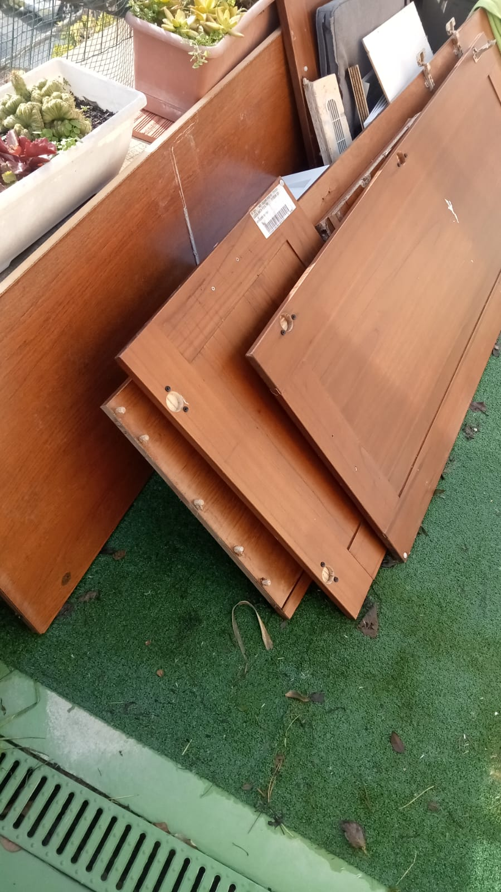

Foto 1
IMG-20260201-WA0010

Foto 2
IMG-20260201-WA0011

Foto 3
IMG-20260201-WA0012

Foto 4
IMG-20260201-WA0013

Foto 5
IMG-20260201-WA0012

Foto 6
IMG-20260201-WA0013
Video 1
VID-20260201-WA0016.mp4
Video 2
VID-20260201-WA0017.mp4
Ore 12:44
Mi accorgo a quest' ora dei messaggi e del vocale (ero a pranzo fuori) e di un ulteriore messaggio cancellato alle 14:41.
Richiamo e mi risponde Federica Fanciulacci dicedomi che mi passa il padre Massimo.
Mi parla di cattiva manutenzione della griglia alla Foto 5.
Gli dico che non sono a casa e che appena possibile controllerò la griglia. Lo saluto dicendogli di sentirsi il giorno dopo Lunedì 03/02/2026 con più calma.
La Foto 6, con le tavole, non ho capito perchè è stata fatta, non vedo come possono ostruire il drenaggio. Le tavole sono in attesa di smaltimento con la REA.
Mi parla di cattiva manutenzione della griglia alla Foto 5.
Gli dico che non sono a casa e che appena possibile controllerò la griglia. Lo saluto dicendogli di sentirsi il giorno dopo Lunedì 03/02/2026 con più calma.
La Foto 6, con le tavole, non ho capito perchè è stata fatta, non vedo come possono ostruire il drenaggio. Le tavole sono in attesa di smaltimento con la REA.
Ore 14:05 - Rientro a casa
Mi reco immediatamente sul terrazzo e alzo la griglia per controllare se effettivamente fosse intasata.
Tolgo il ciuffo d' erba in fondo ('... c'è erba nelle grate' del messaggio) per far vedere che li c'è il muro e non lo scarico.
Il terrazzo, circa 3 anni fa, è stato impermelizzato con la resina. Sostenuto tutte le spese.
Tolgo il ciuffo d' erba in fondo ('... c'è erba nelle grate' del messaggio) per far vedere che li c'è il muro e non lo scarico.
Il terrazzo, circa 3 anni fa, è stato impermelizzato con la resina. Sostenuto tutte le spese.
Video 3
20260201_141249.mp4
Lunedì 02/02/2026 - Ore 13:00
Situazione muro perimetrale davanti al parcheggio

Foto 7
20260202_135417

Foto 8
20260202_133411

Foto 9
20260202_133408

Foto 10
20260202_133418

Foto 11
20260202_130520

Foto 12
20260202_133333

Foto 13
20260202_130541

Foto 14
20260202_135334

Foto 15
20260202_130552

Foto 16
20260202_130600
Foto 17
20260202_130600

Foto 18
20260202_130548